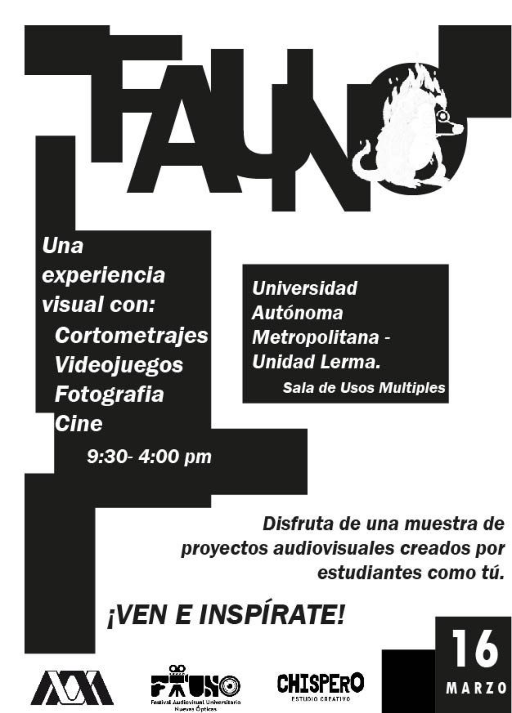
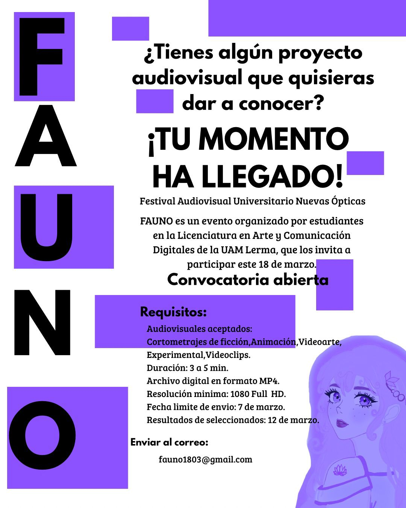
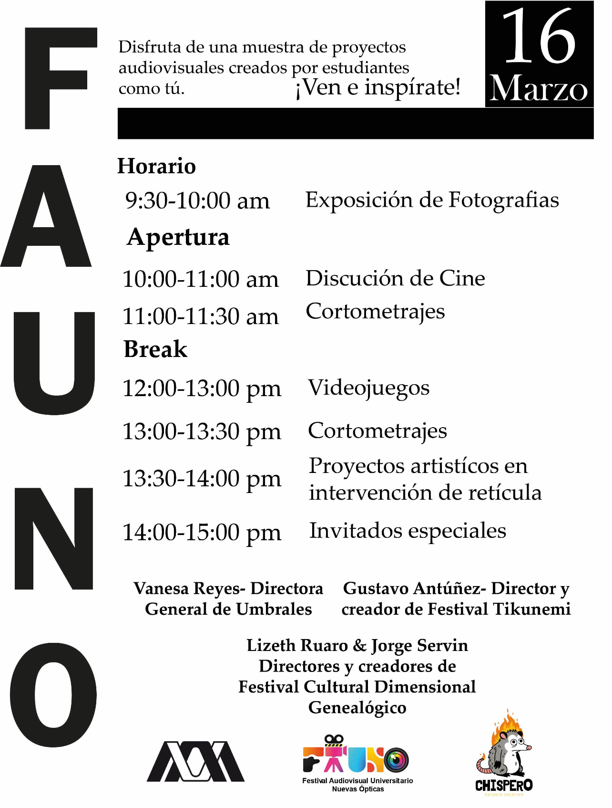
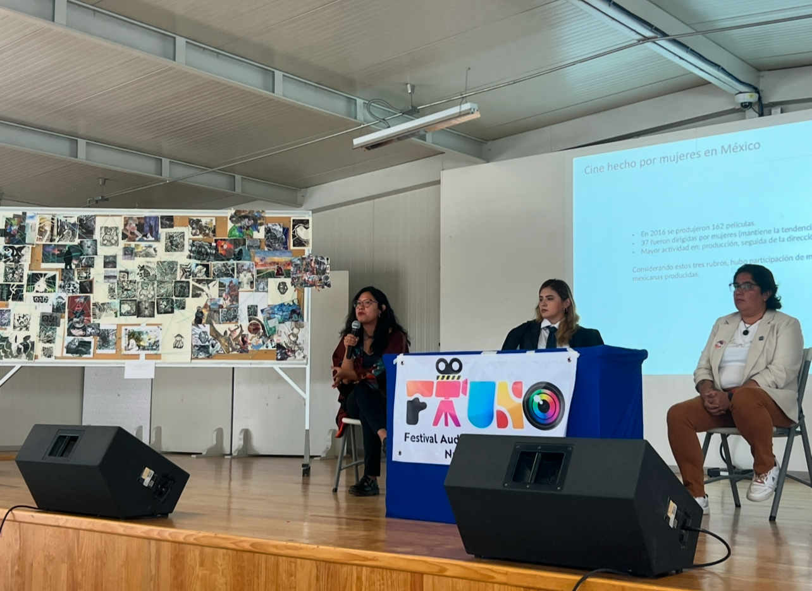
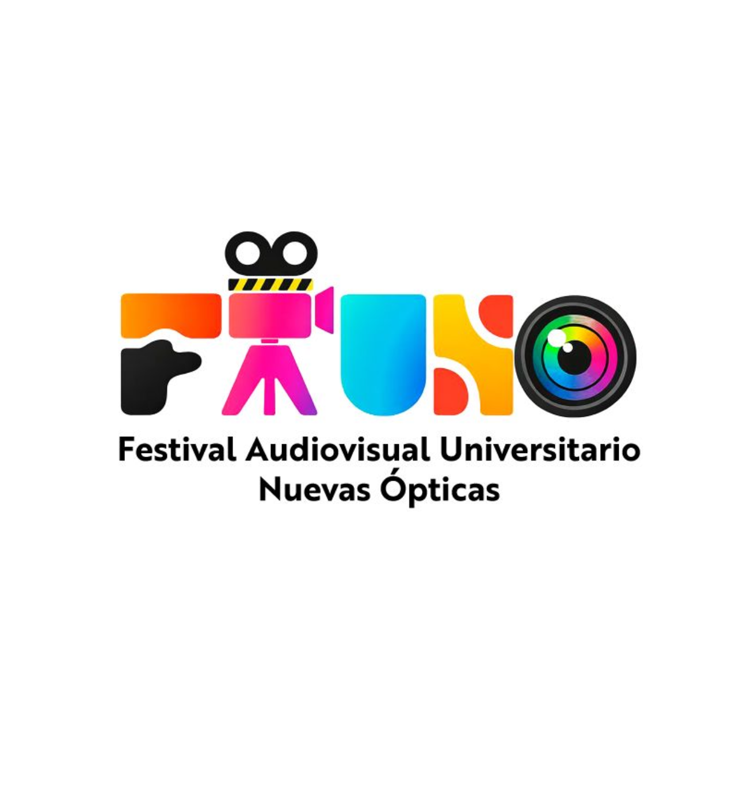
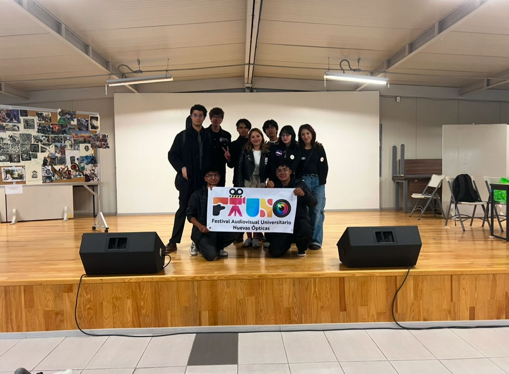

FAUNO es un festival de arte creado por estudiantes de la Licenciatura en Artes y Comunicación Digitales de la Universidad Autónoma Metropolitana, Unidad Lerma. En este espacio se exhibieron diversos proyectos artísticos, incluyendo fotografía, cortometrajes y videojuegos. Asimismo, se abrió un foro para una mesa de diálogo con docentes de la institución. La producción del festival implicó un riguroso cronograma que incluyó convocatorias para que la comunidad mostrara sus cortometrajes y la gestión de horarios para el día del evento, asegurando un espacio adecuado para cada presentación. A pesar de ser su primera edición, el festival fue un rotundo éxito. Esta grata experiencia generó en el colectivo el entusiasmo para seguir difundiendo el arte generado dentro de la unidad, con la meta de trascender el plantel y explorar nuevos horizontes para la exhibición de arte digital y plástico. Cabe destacar que el festival contó con la colaboración de "Chispero", un colectivo perteneciente a la misma licenciatura.





